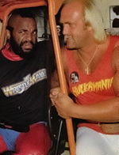
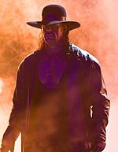
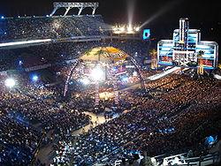
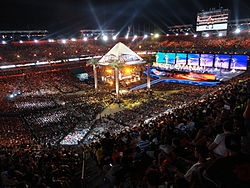

WRESTLEMANIA
WrestleMania is a professional wrestling pay-per-view (PPV) event, produced annually in mid-late March or early April by WWE, a professional wrestling promotion based in Connecticut. WWE first produced the event in 1985 to be its premier annual event and has since produced twenty-nine editions, the thirtieth in New Orleans, Louisiana in 2014. WWE regards it as a flagship event due to it being the most successful and longest-running professional wrestling event in history. WrestleMania was conceptualized by WWE owner Vince McMahon.
.png) WrestleMania's widespread success helped transform the professional wrestling industry and make WWE the most successful wrestling promotion in the world. The event has facilitated the rise to stardom of wrestlers including Hulk Hogan, André the Giant, "Rowdy" Roddy Piper, "Macho Man" Randy Savage, Bret Hart, The Ultimate Warrior, The Undertaker, Shawn Michaels, Steve Austin, The Rock, John Cena, Batista, Triple H, Rey Mysterio, Randy Orton, Edge and CM Punk. Celebrities such as Aretha Franklin, Cyndi Lauper, Muhammad Ali, Mr. T, Alice Cooper, Lawrence Taylor, Pamela Anderson, Mike Tyson, Donald Trump, Floyd Mayweather, Snoop Dogg and others have participated or made special appearances within the events.
WrestleMania propels the worldwide commercial success of the WWE through media, merchandise and shows. All of the events produced have been sold out within a short period of time, with recent editions being sold out within minutes of tickets going on sale. The first WrestleMania was held in Madison Square Garden in New York City; the 10th and 20th editions were also held there. WrestleMania III in the Detroit suburb of Pontiac, Michigan was the highest-attended indoor sports event in the world, with 93,173 fans in attendance. The record stood until February 14, 2010, when the 2010 NBA All-Star Game broke the indoor sporting event record with an attendance of 108,713 at Cowboys Stadium. All but the two editions held in Toronto, Canada have been hosted in U.S. cities.
WrestleMania's widespread success helped transform the professional wrestling industry and make WWE the most successful wrestling promotion in the world. The event has facilitated the rise to stardom of wrestlers including Hulk Hogan, André the Giant, "Rowdy" Roddy Piper, "Macho Man" Randy Savage, Bret Hart, The Ultimate Warrior, The Undertaker, Shawn Michaels, Steve Austin, The Rock, John Cena, Batista, Triple H, Rey Mysterio, Randy Orton, Edge and CM Punk. Celebrities such as Aretha Franklin, Cyndi Lauper, Muhammad Ali, Mr. T, Alice Cooper, Lawrence Taylor, Pamela Anderson, Mike Tyson, Donald Trump, Floyd Mayweather, Snoop Dogg and others have participated or made special appearances within the events.
WrestleMania propels the worldwide commercial success of the WWE through media, merchandise and shows. All of the events produced have been sold out within a short period of time, with recent editions being sold out within minutes of tickets going on sale. The first WrestleMania was held in Madison Square Garden in New York City; the 10th and 20th editions were also held there. WrestleMania III in the Detroit suburb of Pontiac, Michigan was the highest-attended indoor sports event in the world, with 93,173 fans in attendance. The record stood until February 14, 2010, when the 2010 NBA All-Star Game broke the indoor sporting event record with an attendance of 108,713 at Cowboys Stadium. All but the two editions held in Toronto, Canada have been hosted in U.S. cities.
1980'S

The World Wrestling Federation staged the first WrestleMania on March 31, 1985 at Madison Square Garden in New York City. The main event was a tag-team match between the WWF Champion Hulk Hogan and Mr. T, accompanied by Jimmy Snuka against the team of Roddy Piper and Paul Orndorff, who were accompanied by Cowboy Bob Orton. The financial and critical success of the event secured the company's status as the most successful promotion in the United States, rising above competitors such as the National Wrestling Alliance and American Wrestling Association. In attendance were business celebrity Sy Sperling and broadcasting executive Tony D'Angelo. WrestleMania 2 was held the following year and took place in three venues across the country. The Nassau Veterans Memorial Coliseum in Uniondale, New York, the Rosemont Horizon in Rosemont, Illinois, and the Los Angeles Memorial Sports Arena in Los Angeles, California. They each featured multiple matches that led up to the main event; this saw WWF Champion Hulk Hogan
defeat the challenger King Kong Bundy in a steel cage match.
A world indoor attendance-record of 93,173 fans was set at WrestleMania III, which was also the largest paying attendance in the history of professional wrestling at the time. The event is widely considered to be the pinnacle of the 1980s wrestling boom. To make certain that every seat in the Pontiac Silverdome would be filled, the WWF decided to exclude the entire state of Michigan from pay-per-view access to the event, which made attending the event the only way for fans in Michigan to see it. The event featured Hulk Hogan defending the WWF Championship against André the Giant and the WWF Intercontinental Championship match between Randy Savage and Ricky Steamboat.
WrestleMania IV was an all tournament event to crown a new WWF Champion. The second round of the tournament featured a rematch of the previous year's main event between Hulk Hogan and André the Giant while Randy Savage went on to defeat Ted DiBiase in the finals. The event returned the following year to Atlantic City, New Jersey for WrestleMania V, in which Hulk Hogan defeated Randy Savage for the WWF Championship Savage had won the previous year.
1990'S
The first time WrestleMania took place outside of the United States was WrestleMania VI, which was held at the SkyDome, in Toronto, Ontario, Canada. In the main event match, The Ultimate Warrior won the WWF Championship from Hulk Hogan. The following year, the event returned to the United States for WrestleMania VII, which was originally scheduled to be held at the outdoors Los Angeles Memorial Coliseum. The event was moved to the adjacent indoors Los Angeles Memorial Sports Arena for security reasons related to the Gulf War. The event saw Hulk Hogan face Sgt. Slaughter for the WWF Championship, while The Undertaker made his WrestleMania debut defeating Jimmy Snuka. Since then, The Undertaker has been undefeated in all of his WrestleMania matches. The next edition, WrestleMania VIII, was held in the Hoosier Dome with Macho Man Randy Savage defeating Ric Flair for the WWF Championship and Hulk Hogan defeating Sid Justice via disqualification.

The Undertaker has been undefeated at WrestleMania with a 21–0 winning streak
Shawn Michaels returned from retirement in the 2000s to consistently produce Match-of-the-Year candidates at the event – earning himself the moniker ‘Mr. WrestleMania’
WrestleMania IX was the first WrestleMania held at an outdoor venue. It was also the first and only time in Wrestlemania history that the WWF title switched twice. Yokozuna defeated Bret Hart to become the WWF Champion, only to lose it to Hulk Hogan. The tenth edition of the event, WrestleMania X saw its return to Madison Square Garden. The event featured Owen Hart defeating his elder brother Bret; a ladder match for the WWF Intercontinental Championship also headlined, in which Razor Ramon defeated Shawn Michaels. Bret having been defeated earlier won the WWF title from Yokozuna in the main event. Bret is the only wrestler in Wrestlemania history to lose his first match and come back to win the WWF title in the main event. Michaels defeated Bret Hart to win the WWF Championship in a 60-minute Iron Man match at WrestleMania XII. The match is considered to be one of the best matches in the history of the event. The event also saw the return of the Ultimate Warrior who defeated Hunter Hearst Helmsley (later kno
wn as Triple H) in the latter's WrestleMania debut. The following year at WrestleMania 13, a submission match pitted Bret Hart and Stone Cold Steve Austin against one another in a bout that received much acclaim and The Undertaker defeated Psycho Sid for the WWF Championship in the main event.
At WrestleMania XIV, Stone Cold Steve Austin defeated Shawn Michaels to become the new WWF Champion in a match that featured Mike Tyson serving as the special enforcer. Although Tyson had been aligned with Michaels and his stable D-Generation X, Tyson revealed to have been aligned with Austin all along as he personally counted the pinfall and declared Austin the winner. The Undertaker and Kane fought for first time at this event where The Undertaker won. The event became known for starting "The Attitude Era." The following year at WrestleMania XV, Austin defeated The Rock to regain the WWF Championship. The event featured the first of many encounters at WrestleMania between Steve Austin and The Rock in the rivalry of the two most prominent and popular stars of The Attitude Era.
2000'S
WrestleMania 2000 featured the first ever Triangle Ladder match for the WWF Tag Team Championship, involving the Hardy Boyz, the Dudley Boyz and Edge and Christian. The main event featured the WWF Champion Triple H successfully defending his title in a fatal four way match against three challengers: The Rock, The Big Show and Mick Foley. This match was billed as having 'a McMahon in every corner' as Triple H was accompanied by Stephanie McMahon, The Rock by Vince McMahon, The Big Show by Shane McMahon and Mick Foley by Linda McMahon.

At WrestleMania X-Seven, Stone Cold Steve Austin defeated The Rock and regained the WWF Championship. The event also featured Vince and Shane McMahon in a Street Fight, while Edge and Christian won the WWF Tag Team Championship against the Hardy Boyz and Dudley Boyz in the second Tables, Ladders, and Chairs match. The event was the pinnacle of the 1990s wrestling boom, concluding The Attitude Era. It was also the first WrestleMania held after the dissolution of the company's rival, World Championship Wrestling (WCW) and the Monday Night Wars. WrestleMania X8 was the last WrestleMania to be produced under the WWF name and featured Triple H defeating Chris Jericho to win the Undisputed Championship. Steve Austin, The Rock and The Undertaker defeated Scott Hall with Kevin Nash, Hulk Hogan and Ric Flair respectively, all whom had rejoined the company after their stints with WCW. WrestleMania XIX saw Steve Austin's last match to date as he faced The Rock for a third time at WrestleMania, ending their long-running feud. Hulk Hogan defeated Vince McMahon and Shawn Michaels participated in his first WrestleMania match in five years, defeating Chris Jericho. The World Heavyweight Championship was defended for the first time at the event with Triple H retaining against Booker T, while Brock Lesnar defeated Kurt Angle to win the WWE Championship.
World Wrestling Entertainment celebrated the twentieth edition of WrestleMania at Madison Square Garden with WrestleMania XX. The event featured The Undertaker (who returned to his Deadman persona) defeating then-unmasked Kane in their second encounter and the World Heavyweight Championship and WWE Championship victories of Chris Benoit and Eddie Guerrero, respectively. The event also featured the Rock 'n' Sock Connection versus Batista, Randy Orton, and Ric Flair of Evolution where this 2-on-3 handicap match saw The Rock's last match for over seven years, as well as Steve Austin as the guest referee in an interpromotional singles match between the departing superstars Brock Lesnar (who would return to the company eight years later) and Bill Goldberg. The WWE Hall of Fame was reintroduced with an annual induction show held the night before WrestleMania.
An attendance record setting 74,635 fans at the Citrus Bowl for WrestleMania XXIV
At WrestleMania 21, the concept of the Money in the Bank ladder match was introduced as a six-man ladder match that featured a briefcase suspended above the ring containing a contract that guaranteed the winning Raw brand participant a world title match at any time and place of their choosing within one year up to the next year's WrestleMania. In the main events, the WWE Championship and the World Heavyweight Championship passed on to John Cena and Batista respectively by defeating John "Bradshaw" Layfield and Triple H in their respective matches. The event also featured the return of Stone Cold Steve Austin after a year long hiatus, while Kurt Angle defeated Shawn Michaels in a highly acclaimed match. The Money in the Bank ladder match was also held at WrestleMania 22 as a six-man interpromotional match where the winner would get a world title match of their choosing, regardless of the brand they were on. At WrestleMania 23, the Money in the Bank match expanded to include eight men and would include stars from the revived ECW brand. John Cena would go on to retain his WWE Championship at both WrestleMania 22 and 23, while the same events would see Rey Mysterio and The Undertaker win the World Heavyweight Championship respectively. Representing Donald Trump, ECW World Champion Bobby Lashley defeated Umaga, who represented Vince McMahon, in a match billed as the "battle of the billionaires" and arbitrated by Stone Cold Steve Austin at WrestleMania 23.
At WrestleMania XXIV, Shawn Michaels defeated Ric Flair in a highly acclaimed match, while the Money in the Bank ladder match included seven participants from all three brands. The ECW Championship was defended for the only time at a WrestleMania event, when Kane emerged as the new ECW Champion in a record 8 seconds, while Randy Orton retained the WWE Championship and The Undertaker won the World Heavyweight Championship for the second consecutive year, defeating Edge. In an encounter that featured major media coverage, boxing world champion Floyd Mayweather, Jr. defeated The Big Show. The event was the second WrestleMania to be held at an outdoor venue. WrestleMania XXV featured Chris Jericho defeating WWE Hall of Famers Roddy Piper, Jimmy Snuka, and Ricky Steamboat in a match that featured appearances by Ric Flair and actor Mickey Rourke. Shawn Michaels unsuccessfully attempted to hand The Undertaker his first defeat at a WrestleMania in an acclaimed match, and the WWE Intercontinental Championship was defended at the event for the first time since WrestleMania X8 with Rey Mysterio defeating John "Bradshaw" Layfield. John Cena defeated Edge for the World Heavyweight Championship also involving The Big Show, while Triple H retained the WWE Championship against Randy Orton.
2010'S
At WrestleMania XXVI, the professional wrestling career of Shawn Michaels came to an end as he faced The Undertaker in a highly acclaimed re-match of their encounter from the previous year. The event also featured John Cena winning the WWE Championship and Chris Jericho retaining the World Heavyweight Championship. Following Bret Hart's return to WWE in over twelve years since the Montreal Screwjob incident, Bret Hart defeated Vince McMahon in a No-Holds Barred match with members of the Hart wrestling family present.
WrestleMania XXVII featured the return of The Rock following a seven-year hiatus to serve as host for the event. Trish Stratus competed in her first WrestleMania since the twenty-second edition, teaming with John Morrison and Jersey Shore's Nicole "Snooki" Polizzi to defeat LayCool and Dolph Ziggler. Longtime WWE announcers Michael Cole and Jerry Lawler brawled in a match officiated by Stone Cold Steve Austin, while Triple H failed in his attempt to avenge Shawn Michaels' loss to The Undertaker from a year prior. This was the first WrestleMania in history in which both the World Heavyweight Champion and WWE Champion were able to successfully retain their titles. World Heavyweight Champion Edge defeated the challenger Alberto Del Rio in what would be Edge's last match before his retirement on April 11, and The Rock closed out the event saluting the fans after laying out John Cena and The Miz following Miz retaining the WWE Championship. This incident would set up the main event for the following year's WrestleMania.
WrestleMania XXVIII had three "main event" matches. In the first main event, The Undertaker defeated Triple H in a Hell in a Cell match via pinfall, officiated by WWE Hall of Famer Shawn Michaels, extending his Wrestlemania streak to 20–0. The second main event featured CM Punk retaining the WWE Championship against Chris Jericho, via submission.
In 2013, WrestleMania 29 had 80,676 fans in attendance, becoming the second-highest attended WrestleMania ever. This WrestleMania had three main events. The first saw The Undertaker extend his undefeated streak to twenty-one matches by defeating CM Punk. Triple H, with the help of Shawn Michaels, defeated Brock Lesnar in a No Holds Barred match; had Triple H lost, he would have had to retire from in-ring competition. In the final match, John Cena avenged his loss from the previous year by defeating The Rock for the WWE Championship. Other matches included Alberto Del Rio successfully defending his World Heavyweight Championship against Jack Swagger, and Team Hell No (Daniel Bryan and Kane) retaining their WWE Tag Team Championship against Dolph Ziggler and Big E Langston.
SOURCE:
BACK